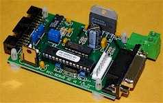
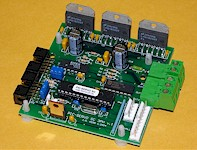
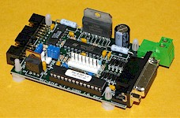
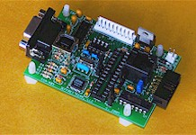

|
|
|
 |
|
PIC-SERVO SC Motion Control Board
Part Number: KAE-T0V10-BDV1
Motor Type: DC Servo Motor (brush-type)
Driver Ratings: 3A cont./6A peak, 12-48vdc
Controller chip: PIC-SERVO SC
board data sheet controller chip data sheet |
| Specifications |
- 32 bit position, velocity and acceleration control
- Trapezoidal and velocity profiling permit on-the-fly parameter changes
- 16 bit PID servo gains can be changed on-the-fly
- Multiaxis coordinated motion control support
- 2 or 3 channel encoder input, limit switch inputs, hall sensor inputs
- Optional Step and Direction inputs
- Amplifier includes overcurrent, overvoltage, undervoltage and thermal overload
protection
- May also be used with external amplifiers
- 4-wire RS485 communications interface can be connect to additional controllers (up to 32
total)
- Complete documentation and example software available
- Nominal size: 2" x 3"
|
The PIC-SERVO SC Motion Control Board is maybe
the fastest and lowest-cost way of getting your DC servo motor up and running. The clear,
explicit documentation and the Windows test utility program take the mystery out of servo
motor control. The board is designed for easily adding additional axes of control without
flipping dip switches or setting jumpers. By mounting these compact, modular boards near
your motors, you can greatly simplify the rat's nest of wiring which plagues most
multi-axis control systems. The PIC-SERVO SC Motion Control
Board also includes motor power monitoring, soft current limiting, and position error
limiting which eliminate the need for an additional real-time processor. If used with the Z232-485
Serial Adapter or with a Step & Direction signal generator, a set of PIC-SERVO
SC Motion Controllers can even be operated as a stand-alone control system.
All this comes at a price comparable to stepper motor controllers. (back to top)
|
 |
|
PIC-SERVO SC 3PH Motion Control Board
Part Number: KAE-T0V10-BD3PHV1
Motor Type: Brushless or Brush-type DC Servo Motor
Driver Ratings: 6A cont./7A peak, 12-48vdc
Controller chip: PIC-SERVO SC
board data sheet controller chip data sheet |
| Specifications |
- 32 bit position, velocity and acceleration control
- Trapezoidal and velocity profiling permit on-the-fly parameter changes
- 16 bit PID servo gains can be changed on-the-fly
- Multiaxis coordinated motion control support
- 2 or 3 channel encoder input, limit switch inputs
- Optional Step and Direction inputs
- May be used with DC brushless or brush-type motors
- Amplifier includes overcurrent, overvoltage, undervoltage and thermal overload
protection
- 4-wire RS485 communications interface can be connect to additional controllers (up to 32
total)
- Complete documentation and example software available
- Nominal size: 3" x 3"
|
The PIC-SERVO SC 3PH Motion Control Board is
similar to the standard PIC-SERVO SC
board above but with a higher current amplifier capable of driving brushless or brush-type
DC motors. This high-performance, low-cost controller is less than half the cost of
similar brushless motor controllers. It uses the exact same controller chip as the
standard PIC-SERVO SC board and
integrates seamlessly with our other controllers. (back to top)
|
 |
|
PIC-STEP Motion Control Board
Part Number: KAE-T3V1-BDV1
Motor Type: 2-Phase Stepper (4, 6 or 8 wire)
Driver Ratings: 2A per phase, 7.5-46vdc
Controller chip: PIC-STEP
board data sheet controller chip data sheet |
| Specifications |
- Thermally protected bipolar chopper driver with full and half step modes
- Speeds up to 50,000 steps per second
- Trapezoidal and velocity profiling modes with 32 bit position register
- Independent, software controllable running and holding current settings
- Analog input for motor temperature sensing
- Limit switch inputs, e-stop input, plus auxiliary inputs and outputs
- May be used with external microstepping drivers
- 4-wire RS485 communications interface can be connect to additional controllers (up to 32
total)
- Complete documentation and example software available
- Nominal size: 2" x 3"
|
The PIC-STEP Motion Control Board is an
integrated controller which includes both high-speed indexer functions and a power driver.
It integrates seamlessly with our servo controller boards to allow you to easily
control systems with both servo motors and steppers. The PIC-STEP
Motion Control Board is supported by the same Windows test programs and software libraries
used for our servo controllers. (back
to top)
| Specifications |
- 12 digital I/O pins programmable as inputs or outputs
- Three 8-bit analog inputs
- Two PWM output channels with high current (5 amp) drivers
- One counter/timer channel
- Prototyping area for adding components
- 4-wire RS485 communications interface can be connect to additional controllers (up to 32
total)
- Complete documentation and example software available
- Nominal size: 2" x 3"
|
The PIC-I/O General Purpose I/O Controller allow
you to add additional general purpose I/O capabilities to your motion control
system. With a combination of our motion control boards and PIC-I/O
controllers you can create complete machine control systems with no additional
hardware. The PIC-I/O General Purpose I/O Controller is
supported by the same Windows test programs and software libraries used for our servo
controllers. (back to top)
|
 |
|
SSA-485 Smart Serial Adapter
Part Number: KAE-SSA485-BDV2
Controller Type: Serial Adapter + Standalone Host
Controller chip: Motion Basic or PIC18Fxxxx
data sheet |
| Specifications |
- Four basic operating modes:
- RS232 or USB to RS485 pass-thru adapter
- Motion
Basic programmable host controller
- ASCII Command Interface (ACI) Mode
- C programmable host controller using a PIC18xxxx
processor
- In pass-thru adapter mode:
- RS232 (DB9-F) or USB (type B) connection to host
- Host signals translate directly to full-duplex (4-wire) RS485
- For direct communications using our motion controllers' native NMC
protocol
- RS485 connector directly compatible with all of our controller
boards
- In Motion Basic host
controller mode:
- 28 pin socket for our Motion
Basic controller chip (purchased separately)
- Create and download BASIC motion control programs into EEPROM
- Downloaded programs run automatically on power-up
- Simple Windows programming utility used for creating and
debugging programs
- In ASCII Command Interface (ACI) mode (Motion
Basic controller chip required):
- Motion controller boards can be operated by sending simple
ASCII command strings
- Compatible with standard terminal programs like Hyperterminal
- In C programmable host controller mode:
- 28 pin socket for a Microchip PIC18Fxxxx microcontroller
- Connects directly to Microchip's ICD2 development module
- Use MPLAB, Microchip's free development software
- Provides additional digital and analog I/O on-board
- In stand-alone controller modes, the RS232 or USB port is available for communicating
with external computers.
- Complete documentation and example software available
- Nominal size: 2" x 3"
- Note: Version 2 of this board is functionally identical to Version 1, except v.2
will autoselect between USB and RS232 - no jumper selection is necessary.
|
The SSA-485 Smart Serial Adapter allow you to
connect up to 32 of our NMC
motion controllers to you host's (PC, etc.) RS232 or USB port - or - you can use it as a stand-alone host contoroller
for up to 32 of our NMC
modules. As a simple adapter, serial data from your host is translated directly to
RS485. In this mode, you can use our Windows test utility programs or your own
programs to send commands directly to the motion control boards.
By adding a microprocessor chip to the on-board 28-pin socket, the SSA-485
itself becomes the host controller. Our Motion Basic controller chip is a
pre-programmed microcontroller which executes BASIC programs you create with our Windows
based programming and debugging utility. Creating, downloading and debugging simple
motion control programs requires no formal programming knowledge.
You may also plug a PIC18Fxxxx series microprocessor into the on-board 28-pin socket.
Using Microchip's inexpensive ICD2 development tools, you can create powerful C or
assembly language programs to handle complex applications. Please see our software page for a variety of NMC controller example programs.
(back to top)
NMC Communications Cables
p/n KAE-CC20-AC (20") or KAE-CC80-AC (80")
These 10 wire, twisted pair flat-ribbon cables are used for interconnecting our controller
boards to each other and to the SSA-485
adapter. They carry both the RS485 data and logic power and GND. Available in
20" and 80" lengths.
RS232 Cable p/n
KAE-RS232-AC
This DB9/male - DB9/female straight cable connects standard PC COM ports to the SSA-485 adapter. 72"
Length.
USB Cable p/n
KAE-USB-AC
This USB A-B cable connects standard USB ports to the SSA-485 adapter. 72"
Length.
Logic Power Supply p/n
KAE-LPS-AC
This "wall-wart" style power supply is 9vdc unregulated with a rated current of
500 ma. It can supply power to approximately 5 of our controller boards.
(back to top) |
|
|
|